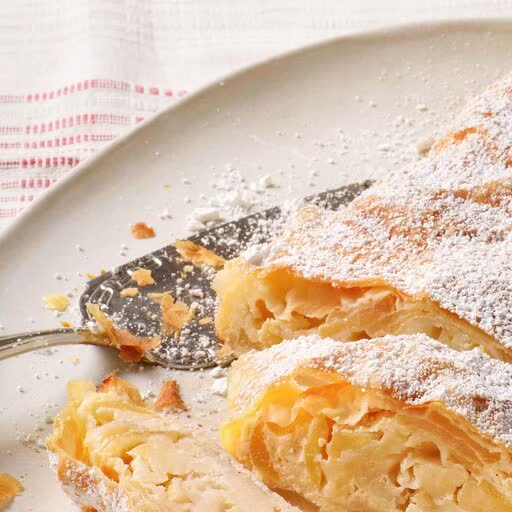

Apfelstrudel
Für den Strudelteig 220 g Weizenmehl (Type 405) 1 EL Speiseöl z. B. Rapsöl etwas Mehl zur Teigverarbeitung Außerdem etwas Puderzucker zum Bestäuben nach Belieben Vanillesauce Zubereitung 220 g Weizenmehl (Type 405) Mehl in eine Rührschüssel geben. Übrige Zutaten hinzufügen und alles mit den Knethaken des Handrührgeräts kurz auf niedrigster, dann auf höchster Stufe zu einem glatten Teig verarbeiten. 1 EL Speiseöl (z. B. Rapsöl) Die Teigkugel mit etwas Speiseöl bestreichen und in einen Topf legen. Mit einem Deckel verschließen und mind. 30 Min. ruhen lassen. Backofen auf 180 Grad (Umluft: 160 Grad) vorheizen. Inzwischen das Backblech mit Backpapier belegen. Äpfel waschen, schälen, entkernen. Äpfel vierteln und in feine Scheiben schneiden. Mit Zucker, Zimt, Zitronensaft und Rum in einer Schüssel gut vermischen. Semmelbrösel und Rosinen unter die Äpfel rühren. Foto: Brigitte Sporrer / einfach backen etwas Mehl zur Teigverarbeitung Geschirrhandtuch mit Mehl bestreuen. Teig mit etwas Mehl bestreuen und mit einem Rollholz so dünn wie möglich ausrollen. Dann den Teig mit den Handrücken vorsichtig zu einem Rechteck (etwa 50 x 35 cm) ziehen, bis dieser so dünn ist, dass man das Geschirrtuch durchsehen kann. Butter zerlassen. Teigränder dünn mit Butter bestreichen. Foto: Brigitte Sporrer / einfach backen Apfelmasse im unteren Drittel auf dem Teig geben und zu einem Strang formen. Dabei die Ränder (ca. 4-5cm) frei lassen. Links und rechts die frei gelassenen Teigränder nach innen klappen. etwas Puderzucker zum Bestäuben nach Belieben Vanillesauce Den Teig mithilfe des Tuches, beginnend von dem unteren Drittel mit der Apfelfüllung, aufrollen. Den Strudel mithilfe des Geschirrtuches auf das vorbereitete Blech mit Backpapier setzen. Dabei das Teigende nach unten schauen lassen. Mit Butter bestreichen. Circa 40 Min. backen. Nach Belieben während des Backens erneut mit etwas Butter bestreichen, mit Puderzucker bestäuben und mit Vanillesauce servieren. Strudelteig einfrieren Strudelteig lässt sich hervorragend einfrieren. Einfach nach dem Kneten etwas platt drücken, mit Öl bestreichen und in einem Gefrierbeutel aufbewahren. Der neutral schmeckende Strudelteig ist süß wie herzhaft verwendbar.



Zitat wird geladen...